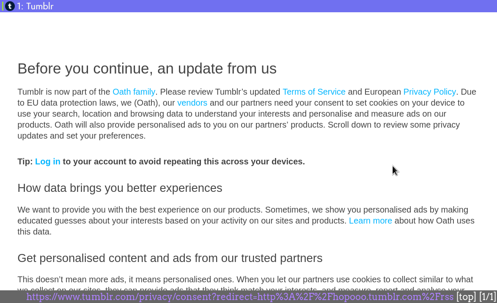

Workaround for newsboat not able to access Tumblr RSS feed
Recently newsboat displayed the following error while retrieving news from a Tumblr RSS feed:
Error while retrieving http://hopooo.tumblr.com/rss: unsupported feed format
going to that URL in my browser showed a notice about the new GDPR rules and a button to accept those new terms:

Accepting the notice forwards you to the actual RSS feed. Further inspection shows that Tumblr sets a cookie, that I accepted the GDPR notice and does not show it in subsequent visits, but the RSS reader newsboat does not handle cookies.
A workaround was posted for another RSS reader on their GitHub page, there it is noted, that if the user agent contains the word Googlebot, then Tumblr does not show the GDPR notice anymore.
This is what I tried and it actually works by just setting
user-agent "Googlebot"
in your $XDG_CONFIG_HOME/newsboat/config file (which is ~/.config/newsboat/config for the most people), or if you do not follow the XDG basedir standard then the ~/.newsboat/config file.